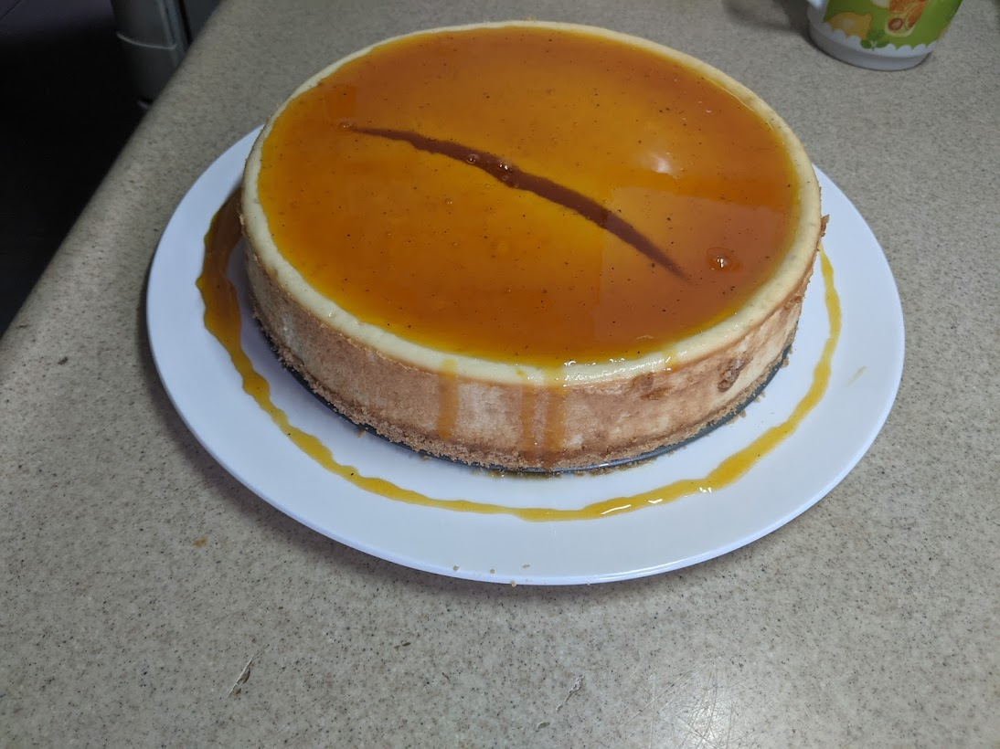

Cheesecake de Parchita

Description
Soft and creamy cheesecake with an acidic, sweet passion fruit topping. Prep time = 15 min, Bake = 40min, Resting time=2 hours.
Ingredients
- 150g Galletas molidas
- 1/2 (60g) Taza de mantequilla derretida
- 3 Barras de queso crema (225g x 3)
- 200g Crema Agria
- 180-g azucar
- 3-4 Huevos
- Ralladura de Limon
- Vainilla
Steps
- Mezclar mantequilla y galletas molidas en la base del molde para hacer la base. Poner a congelar.
- Mezclar mantequilla y galletas molidas en la base del molde para hacer la base. Poner a congelar.
- Mezclar todos los ingredientes y cremar.
- Poner mezcla en el molde por encima de la base y sacar burbujas de aire.
- Colocar en horno por 10 minutos a 200C, despues bajar temperatura a 145C (293F) por 30min.
- Apagar horno y dejar adentro con la puerta cerrada 40min.
Topping de Parchita
- Pulpa de parchita sin semillas
- azucar
- Mezclar partes iguales de azucar y parchita
- Poner al fuego hasta que hierva y espese
- Guardar en la nevera y agregarlo por arriba del cheesecake despues que ambos esten frios.
Home